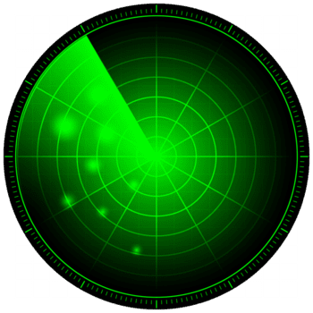
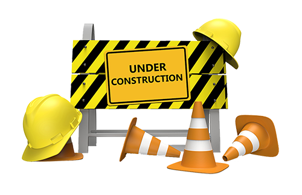
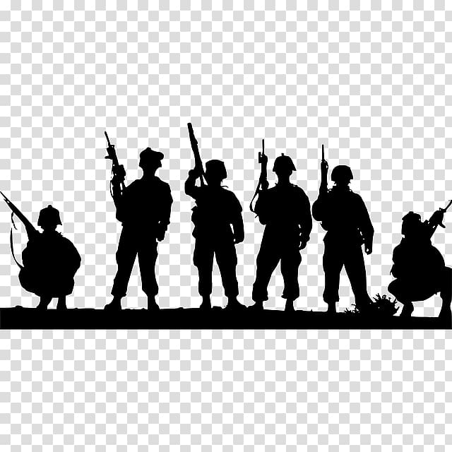
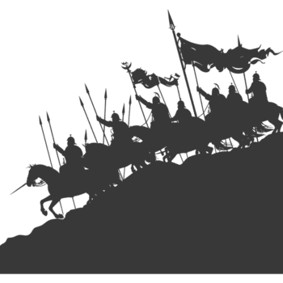

This is our time to level up our drone by making upgrades. Leveling up our drone helps our squad by dealing some significant damage while they’re fighting. Here are some major actions that can be done during this day:
◦ Gather coins, food, or iron
◦ Using drone data component points (use when the Radar Training Arms Race has started)
◦ Using drone parts
◦ Consuming stamina (use when the Radar Training Arms Race has started)
◦ Using Hero EXP grants points, but save them for Hero Day
◦ Use Radar Tasks
DO NOT:
◦ Start red-starred secret tasks (save for Construction Day)
◦ Use Hero Shards, Hero EXP, Skill Medals
◦ Recruit Heroes or Survivors
◦ Use speed-ups
◦ Open any level drone component chests
◦ Level up your Overlord

Ready to expand your base? Today’s construction day, which means our construction workers are busy constructing our buildings. They can provide a lot for our heroes and our troops, but most importantly, it increases power. Here’s what you can do:
◦ Increase building power by unwrapping buildings (use when the Base Building Arms Race has started)
◦ Use construction speed-ups or universal speed-ups for construction (use when the Base Building Arms Race has started)
◦ Recruit survivors (hold out until the last 10 minutes)
◦ Dispatch gold trucks and tasks (including red-star)
◦ Stack radar tasks
DO NOT:
◦ Use Hero Shards, Hero EXP, Skill Medals
◦ Recruit Heroes
◦ Use Research speed-ups
◦ Open any level drone component chests
◦ Level up your Overlord
◦ Claim radar tasks
Trying to level up your headquarters quickly? Focus on the prerequisite buildings while constructing the resources. You need those because the more you use, the more time it takes to build.
Try to apply for the Secretary of Development position to increase construction speed by 60%, while sending out construction co-ops to each other.
Before research day, try to time your research so that when the day comes, complete it. Do not complete research before that day.

Research day! At this time, we are mainly focused on doing research. Our main priority is the Alliance Dual tech tree, which can help us achieve more points and securing victory. Once that is finished, move on to Special Forces to try and unlock Level 10 units.
Here are some major actions to be done:
◦ Use 1,000 valor badges
◦ Increase research power (use when the Tech Research Arms Race has started)
◦ Research a tech in your tech tree
◦ Use a research speed-up or universal speed up for research (use when the Tech Research Arms Race has started)
◦ Open a drone component chest
◦ Complete radar tasks
DO NOT:
◦ Use Hero Shards, Hero EXP, Skill Medals
◦ Recruit Heroes or Survivors
◦ Use Construction speed-ups
◦ Level up your Overlord
Try to apply for the Secretary of Science position often to speed up your research during this window, while sending out research co-op to each other.
Want to become stronger than the others? You made it to the right day! You have been saving up your hero EXP, shards, upgrade ores, and anything else needed to level your heroes up (or not; it’s up to you if you are still saving). Some important things to consider are:
◦ Use hero EXP (use when the Hero Advancement Arms Race has started)
◦ Recruit heroes (use when the Hero Advancement Arms Race has started)
◦ Use hero shards
◦ Use hero skill medals
◦ Use exclusive weapons
DO NOT:
◦ Claim radar tasks
◦ Recruit Survivors
◦ Use any speed-ups
◦ Level up your Overlord
◦ Open any level drone component chests
We recommend leveling your strong squad, then move onto the next one. Promoting tiers? Save until the end and use them until your squad has reached 5-stars.
Get ready to fight! Our main priority is to prepare for battle when Enemy Buster day arrives. This is also the day to level up your Overlord. Here is what we recommend doing:
◦ Train any level units (use when Unit Progression Arms Race has started)
◦ Use training speed-ups (use when Unit Progression Arms Race has started)
◦ Research a tech
◦ Use research speed-ups (use when the Tech Research Arms Race has started)
◦ Construct a building
◦ Use construction speed-ups (use when the Base Building Arms Race has started)
◦ Claim radar tasks
DO NOT:
◦ Recruit Heroes or Survivors
◦ Use Hero Shards, Hero EXP, Skill Medals
◦ Open any level drone component chests

War! The battle between us and our opponent server’s alliance is underway, held by the Alliance Duel. There are heroes on both sides. Evil is everywhere.
In a stunning move, one of the members from the opposing alliance has swept into our warzone server and burnt nearly every base. Those who are in our warzone, have lost their lives.
As the members of our alliance enter the opposing warzone's server, they lead a mission to fight back as a sacrifice to protect us... (rephrased from Star Wars: Revenge of the Sith)
Planning to fight? Follow these actions:
◦ Kill any level unit in the opposing alliance
◦ Kill any level unit in any other alliance in the opposing war zone
Defending your base or not strong enough to fight? Follow these actions:
◦ Shield for 24 hours (recommended)
◦ Dispatch gold truck and tasks
◦ Stack radar tasks
◦ Use speed-ups for construction, research, or for training units
DO NOT:
◦ Claim radar tasks
◦ Recruit Survivors or Heroes
◦ Unwrap buildings (including Headquarters)
◦ Level up your Overlord or Drone
◦ Open any level drone component chests

Thank you to those who fought for our alliance. You did a great job in the war. Now it’s time to make a big recovery by getting ready for the next round of alliance duel.
On our off day:
◦ Stock up on supplies
◦ Stack radar tasks
◦ Stock up on stamina for Radar Training day
◦ Gather resources before reset
◦ If you fought, heal troops in small batches. We recommend timing your healing no more than 3-4 hours when active in the day, and time for 7-9 hours before going to bed.
A brief reminder that the store resets by tonight, so buy out as much as you can.